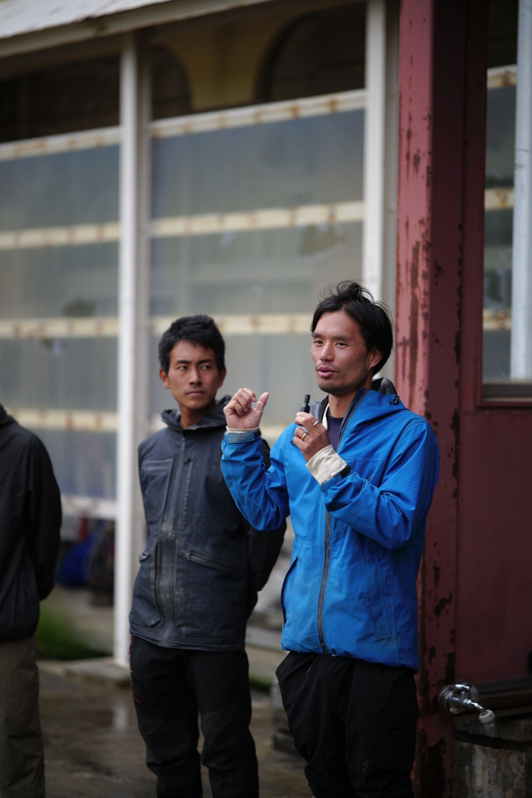
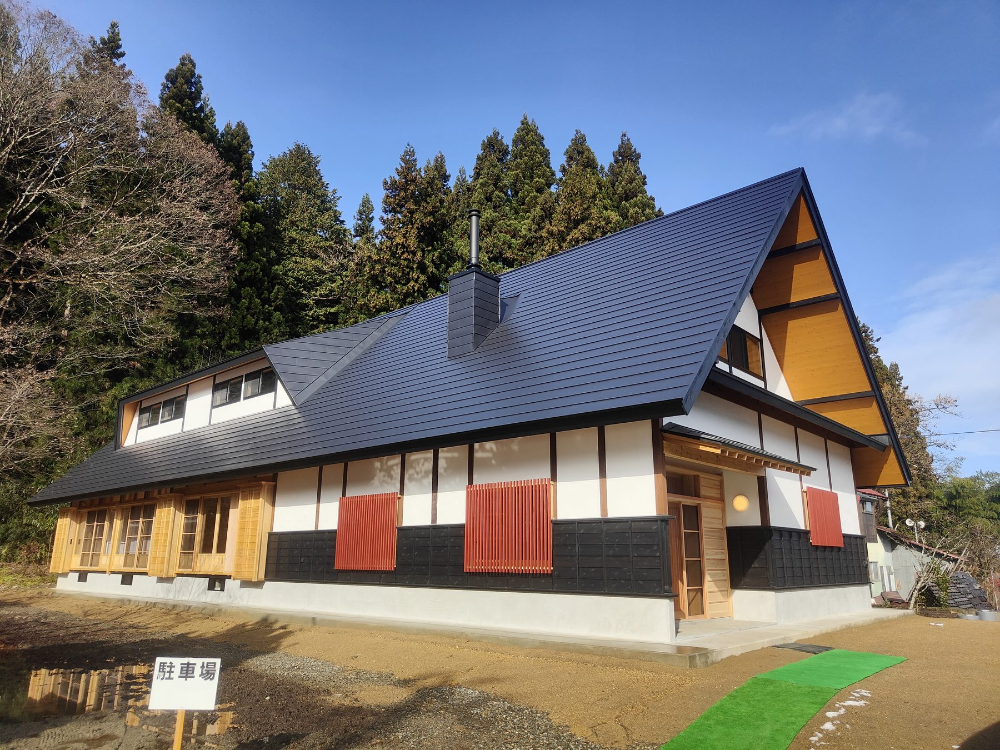

株式会社ZEN-BUは、福島県会津地域を拠点に、私たち自身が農家として働く中で「農園という枠の中では取り組みきれなかったこと」を形にするために生まれた会社です。代表の宇野宏泰と大島武生の二人が中心となり、今も現役の生産者として田畑に立ちながら運営しています。

二人はもともと、会津の農業法人「無の会」で米・大豆・野菜・果樹を育て、味噌や麹、梅干しを仕込んできました。無の会は自らの収益と同じくらい、地域の有機農業・自然農に取り組む人たちの力になることを重んじる農園です。勉強会の主催、卸先の紹介や集荷、有機JAS認証の書類作成まで、対価を求めずに引き受けてきました。
その現場で見えてきたのは、農業だけでは続かないという現実です。無農薬・地域循環型の農産物は本来とても価値が高いのに、市場ではその価値が伝わりきらない。生産者は生産と出荷に時間を取られ、発信との両立は難しい。そして「農家」という看板を掲げている限り、周囲との会話は「何を・どれだけ・いくらで」で終わってしまい、農業を支える社会の土台そのものについて語り合う相手にはなれません。農業の問題は、農業界の中だけでは解決できないのです。
農業は社会のいちばん底を支える産業です。そこから見上げると、今の社会がどれほど危うい前提の上に成り立っているかがはっきり見えます。私たちは、これからの十数年が大きな転換期になると考えています。経済や暮らしの前提がグローバルからローカルへと変わっていく中で、次の時代に対応できる土台を今のうちに築いておく。それがZEN-BUの役割です。
土台とは、生きていくために絶対に欠かせないもの——食べもの、エネルギー、住まい、そして教育や健康・養生といった、人が育ち暮らし続けるための環境です。「これがあれば一旦暮らしていける」という最低限を、地域内の資源でできる限り循環する形で揃えていきます。ただし目指すのは、かろうじて生き延びる暮らしではありません。過剰な拡大を追う豊かさではなく、循環し、質が担保され、規模は小さくてもエネルギーの高い豊かさです。そのため、拠点づくりでは通常なら削られる部分にもあえて良い素材を使い、設備投資を惜しみません。価値観そのものを変えていく必要があるからです。
ZEN-BUは、事業そのものからお金を生むことを第一に置いていません。それは弱さでもあり、同時にぶらしたくない強みでもあります。共感してくださる方の出資や参加によって土台を育て、現場に来て一緒につくる仲間の集まりを、この転換期のうちに形にしたい。それが株式会社ZEN-BUという会社です。

SHINDOは、自然の循環とつながり直し、今ある暮らし方を問い直し、新しい生き方を切り拓いていくプロジェクトです。株式会社ZEN-BUはその運営母体ですが、SHINDOはZEN-BUのものではありません。この点は、私たちがいちばん大切にしている前提です。
SHINDOは、会津の内外に住む多くの方々と一緒に進めている活動です。私たちZEN-BUは、その中で今の段階では運営の中心にいて、いわば場の温度を取る役割を担っているにすぎません。SHINDOという活動自体は、私たちではない人たちの手によっても、どんどん前に進んでいくものだと考えています。むしろそうなっていくことが、SHINDOの目指す姿です。
では、ZEN-BUは何をしているのか。SHINDOが「何をやっているのか、何をやろうとしているのか」という活動の全体像だとすれば、ZEN-BUはその活動が立ち上がるための足場をつくる会社です。人が集まり、何かをつくろうとしたとき、家を建てたいのに木材がない、大工がいない。畑をやりたいのに農機具がない、水路が整っていない。そうした「ないからできない」を一つずつ潰していくのがZEN-BUの事業領域です。食べもの、エネルギー、住まい、教育・養生。生きていくために欠かせない基盤を、地域の資源で循環する形で整えていきます。
その基盤の上で、SHINDOは人の集まる場になります。各地・各分野で同じような価値観を持ちながら、今の組織や業界の制約の中では「本当はこういうものがあったらいい」を実現できずにいる人たち。その人脈と能力とポテンシャルが持ち寄られる場がSHINDOであり、それを発揮できる土台を用意するのがZEN-BUです。会津には、そうした制約を解放し、形にしていける土壌があると私たちは感じています。
今、私たちはSHINDOのホームページを持っていますが、ZEN-BU自体のホームページはありませんでした。これまでずっとSHINDOの説明ばかりをしてきて、ZEN-BUとは何かを語る機会がほとんどなかったからです。SHINDOは開かれた活動であり、ZEN-BUはその活動を支え、次の社会の下ごしらえをする会社です。この二つは、一方がなければもう一方も成り立たない関係にあります。
主な拠点は昭和村です。毎月通ってくださる方は増えてきましたが、常駐できるメンバーがまだ足りていません。仕事の場所を一時的に変えてみたい方、今の仕事を離れてこちらに来たい方、ご家族連れの方も歓迎しています。SHINDOの一員として、そしてZEN-BUがつくる土台を一緒に形にする仲間として、ぜひ声をかけてください。
会津・奥会津に築く、生命の基盤。
新しい豊かさへとつづく道。
発行：株式会社ZEN-BU